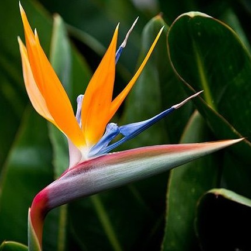
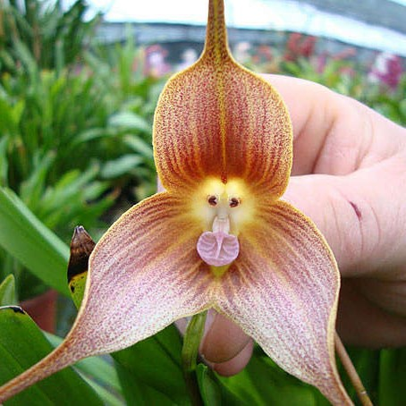
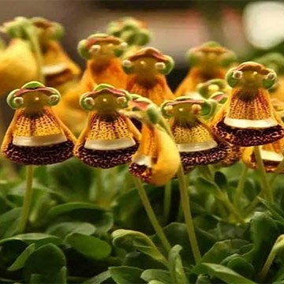
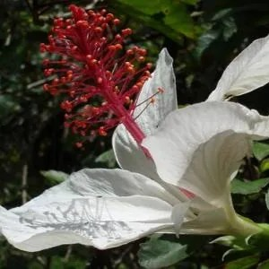
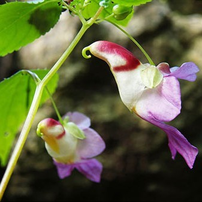
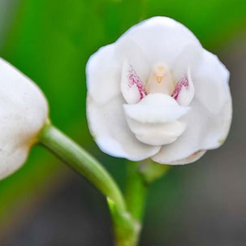
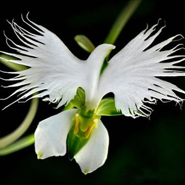
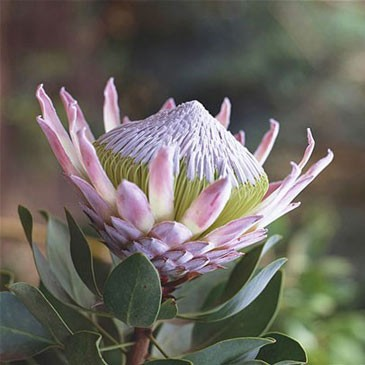
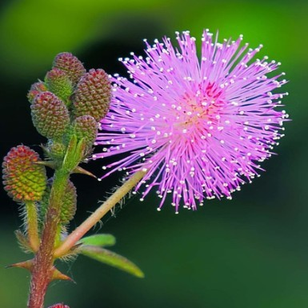

گلهای عجیب و غریب؛ شگفتیهای ناشناخته دنیای گیاهان
طبیعت همیشه فراتر از تصور ما شگفتی در آستین دارد و گلهای عجیب و غریب یکی از جذابترین نمونههای آن هستند. این گلها با شکلها، رنگها و ویژگیهایی کاملاً متفاوت از گلهای معمولی، نگاه هر بینندهای را به خود خیره میکنند.
بعضی از آنها بویی غیرمعمول دارند، برخی فقط در شرایط خاصی شکوفا میشوند و برخی دیگر ظاهری دارند که به سختی میتوان باور کرد طبیعی باشند.
در این مقاله قصد داریم با تعدادی از عجیبترین گلهای جهان آشنا شویم؛ گلهایی که نهتنها زیبا هستند، بلکه داستانهای علمی و طبیعی شگفتانگیزی پشت آنها نهفته است. شناخت این گیاهان نادر، ما را بیشتر با تنوع بیپایان طبیعت و هوشمندی آن آشنا میکند.
پرنده بهشتی
منشا: در سال 1772 میلادی توسط فرانسیس ماسون کشف شد.
نام علمی: Strelitzia reginae
مکانهای پیدایش: جنگلهای ساحلی آفریقای جنوبی
گل استرلیتزیا که با نام گل پرنده بهشتی نیز شناخته میشود، از جمله گیاهان آپارتمانی مجلل و چشمنواز است که بهراحتی توجه هر بینندهای را جلب میکند. این گیاه اصیل برای آنکه زیبایی و شکوه واقعی خود را نشان دهد، به فضایی بسیار پرنور و آفتابی نیاز دارد و در صورتی که دما و رطوبت مناسب برای آن فراهم باشد، میتواند به یکی از شاخصترین عناصر دکوراسیون خانه یا محل کار تبدیل شود. با شناخت دقیق شرایط ایدهآل نگهداری، انتخاب بهترین محل قرارگیری، رعایت اصول آبیاری و استفاده از خاک مناسب، میتوان همیشه از داشتن گلدانی شاداب، سرزنده و سالم لذت برد.
ارکیدهی صورت میمونی (Dracula Simia)
این گل با نام علمی دراکولا سیمیا، در جنگل های ابری جنوب شرق اکوادور و پرو یافت شد. دراکولا، به معنی “اژدهای کوچک” است که اشاره به ظاهر عجیب و غریب دو مهمیز (سیخ) بلندی دارد که از دو کاسبرگ بلند بیرون زده است.– سیمیا، اشاره به این واقعیت دارد که این ارکیده جالب توجه چیزی بیش از یک تشابه گذرا به صورت میمون است. آنها معمولا به طرز مرموزی نزدیک به ۲٫۰۰۰ متر بالاتر از آنجایی که چشم کار می کند، در جنگل های ابری جنوب شرق اکوادور و پرو پنهان می شوند. اما یک کلکسیونر گل مشتاق و علاقه مند، چند عکس حیرت انگیز از این میمون ارکید گرفته است.این میمون ارکیده که بر فراز کوه های ابری می روید، می تواند در هر زمان گل بدهد؛ اون یک گل چهار فصل است.عطر و بوی آن شبیه پرتقال رسیده است.
بیگانهی شاد (Calceolaria uniflora)
بیگانه شاد نیز گل شگفت آوری است که در آب و هوای سرد به وفور در آمریکای جنوبی نزدیک به قطب جنوب رشد می کند. این گل کوچک آفتاب نسبی و دمای سرد را ترجیح می دهد.به خاطر سیستم ریشه ای کم عمق، این گل تمایل به رشد در خاک شنی و سنگی دارد . این گل در ارتفاع914 متری یافت می شود . در تابستان شکوفه می دهند و در بالای برگ های مستطیلی روی ریشه های 4 تا 5 اینچی رشد می کند، و به آن ها این حس را می دهد که روی زمین حرکت کنند در حالی که همه گل های بیگانه شاد زرد /پرتقالی با محفظه سفید و لکه های تیره هستند.
کوکای (Kokai cookei)
گلی عالی و نادر با رنگ زرد - سفید است که به طور طبیعی در سریلانکا رشد می کند و گل بهشت نامیده می شود. اما در هند نام دیگری به نام براهما کامالام دارد. این گل ها فقط در شب شکوفه می دهند و به خاطر آن ملکه شب نیز نامیده می شوند. این گل تاریخچه زیبایی در ژاپن دارد که نام آن را می توان "زیبایی زیر ماه" گذاشت . این گل یکی از نادرترین گل یا گیاه در جهان است که تا به حال نمی توان آن را بدون آسیب کند . رایحه ای آرام و جذاب دارد ؛ اما زمان کمی برای زنده ماندن بعد از کندن دارد و فقط چند ساعت طول می کشد. این گل را هرگز نمی توان خرید و مغازه ای از آن زد. این کار باعث شکوفه زدن بین ساعت 10 و 11شب که تا دو ساعت پس از آن ادامه دارد و شروع به ناپدید شدن و ضعیف شدن کامل قبل از شروع روز می کند.
گل طوطی (Impatiens psittacina)
این گل بسیار کمیاب است و بیشتر افراد تا به حال آن را از نزدیک ندیده اند و حتی در مورد وجود آن نیز با شک و تردید صحبت می شود. نوع تایلندی گل طوطی در ردیف گونه های در معرض خطر قرار گرفته و کسی نمی تواند آن را از کشور خارج کند. اگر واقعا دوست دارید از وجود یا عدم وجود آن آگاهی پیدا کنید، باید به مانیپور هند، میانمار و یا منطقه ای کوچک در تایلند نزدیک به شهر چیانگ مای سفر نمایید. اگر از کنار به گیاه نگاه کنید، یک طوطی در حال پرواز پیش روی چشمان شما قرار خواهد گرفت. هنگامی که عکس های گل طوطی در سراسر اینترنت پخش شد، بسیای تصور می کردند که آن ها با تکنیک های دیجیتالی دستکاری شده اند، زیرا تقریبا هیچکس گل ها را از نزدیک ندیده بود.
ارکیدهی روح مقدس (Peristeria elata)
این گل کمیاب که به ارکیدهی کبوتر نیز معروف است، بومی پاناما بوده و شکوفههایی سفید و معطر دارد.
ارکیدهی حواصیل سفید (Habenaria radiata)
ارکیده روح یک گل کم رنگ است که فاقد کلروفیل، برگ است؛ و ترجیح می دهد در مناطق کم نور رشد کند. علاوه بر این، این گیاهی است که از انقراض بازگشته است، ارکیده ارواح تقریبا کمیاب یا منقرض شده بود تا زمانی که در سال 2010 در یک چوب هرفوردشایر پیدا شد. با این حال، هنوز هم یکی از کمیاب ترین گیاهان در سراسر جهان است. ارکیده شبح که در دنیای علمی با نام Dendrophylax lindenii شناخته می شود، به خاطر گلبرگ های ظریف و سفید گل هایش ارزشمند است. همچنین نام خود را از حرکت شبانه گل که شبیه یک روح است گرفته است. ارکیده روح در فلوریدا از حفاظت از محیط زیست برخوردار است و دستکاری یا جمع آوری آنها غیرقانونی است. تا دسامبر 2016، اعتقاد بر این بود که تنها حدود 2000 گیاه در طبیعت باقی مانده است. شکار غیرقانونی و همچنین توسعه انسانی همچنان موجودیت آن را تهدید می کند. ارکیده را می توان به همراه بیش از 30 نوع ارکیده دیگر در منطقه حفاظت شده بزرگ یافت.
گل پروتیا
گل پروتیا با نامی برگرفته از الهه یونانی پروتئوس که به توانایی تغییر شکل مشهور بود، نمادی از تنوع و زیبایی است. این گل با ویژگیهای خاص خود، از رنگها و اشکال متنوع گرفته تا طراحی خیرهکنندهای که دارد، همواره توجه علاقهمندان به گیاهان را جلب کرده است. قدمت طولانی پروتیا در تاریخ گیاهشناسی و ارتباط آن با مفاهیمی چون شجاعت، تحول و استقامت، باعث شده تا بسیاری از افراد برای خرید گل پروتیا اقدام کنند و از آن بهعنوان یک نماد قدرتمند و خاص در فضاهای لوکس استفاده نمایند. خرید شکرپاره پادشاه بهدلیل جذابیت و جلوه منحصر بهفرد آن، گزینهای محبوب برای تزئین فضاهای خاص و چشمگیر بهشمار میرود. این گل با ظاهر زیبا و تنوع رنگی خود، نهتنها به محیطتان شخصیت میبخشد، بلکه حس شجاعت و استقامت را بهطور غیرمستقیم منتقل میکند. اگر به دنبال انتخابی متفاوت و خاص برای فضای خود هستید، پروتیا بهترین گزینه محسوب میشود.
گل خجالتی
این گیاه به دلیل واکنش سریع به لمس، بسیار معروف است و برگهای آن در هنگام تحریک به سرعت جمع میشوند.
